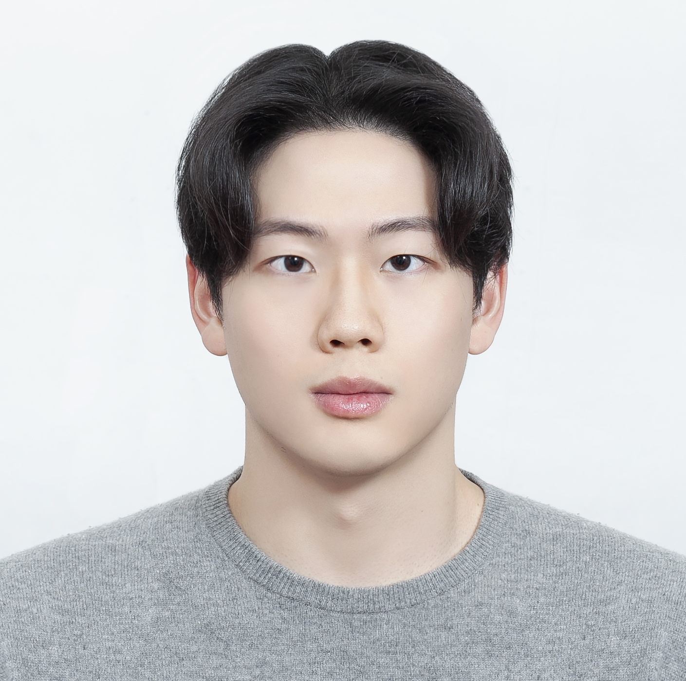
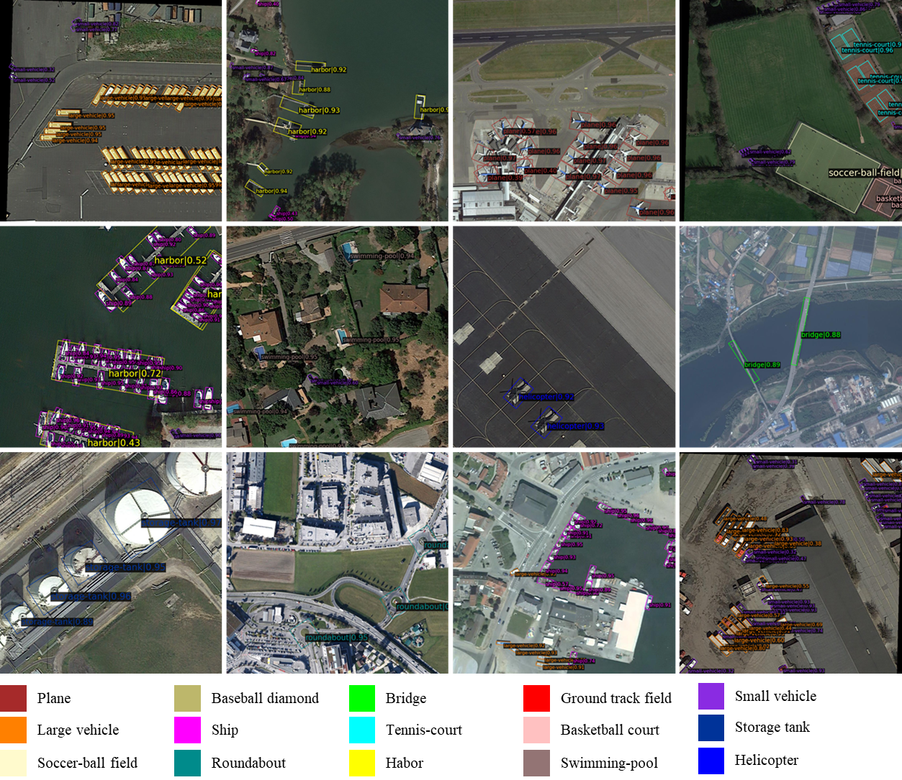
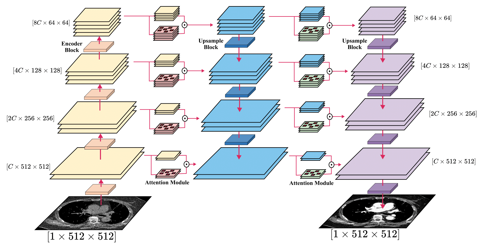
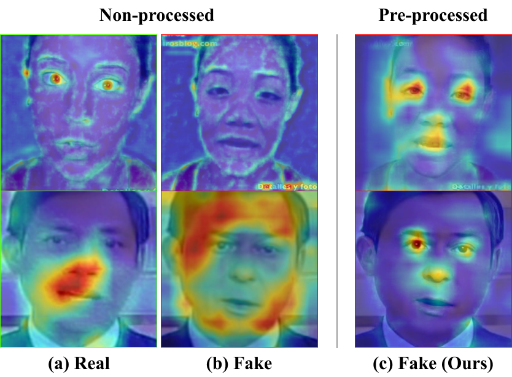

|
Taejune Kim Department of Computer Science and Engineering |
 |
{kind=link}
ResearchI'm interested in computer vision, anomaly detection, and object detection. Representative papers are highlighted. |
|

|
Rotated-DETR: an End-to-End Transformer-based Oriented Object Detector for Aerial Images
Jinbeom Kim*, Giljun Lee*, Taejune Kim, Simon S. Woo SAC, 2023 Inferencing oriented bounding box using Deformable-DETR framework. |
|

|
MGCMA: Multi-scale Generator with Channel-wise Mask Attention to generate Synthetic Contrast-enhanced Chest Computed Tomography
Jeongho Kim, Yun-Gyoo Lee, Donggeun Ko, Taejune Kim, Soo-Youn Ham, Simon S. Woo SAC, 2023 Synthesizing contrast-enhanced style on CT scans. |

|
A2: Adaptive Augmentation for Effectively Mitigating Dataset Bias
Jaeju An, Taejune Kim, Donggeun Ko, Sangyup Lee, Simon S. Woo ACCV, 2022 Mitigating dataset bias |
|

|
Evading Deepfake Detectors via High Quality Face Pre-Processing Methods
Jeongho Kim*, Taejune Kim*, Jeonghyeon Kim, Simon S. Woo ICPR, 2022 Concealing deepfake artifacts via image processing procedures. |
Awards |
|
4th Competition Track 3 - 2nd Place, Artificial Intelligence Grand Challenge (AGC) 2022
4th Competition Track 3 - 1st Place, Artificial Intelligence Grand Challenge (AGC) 2021 |
Miscellanea
Squat: 150kg
|
|
Design and source code from Jon Barron's website. |